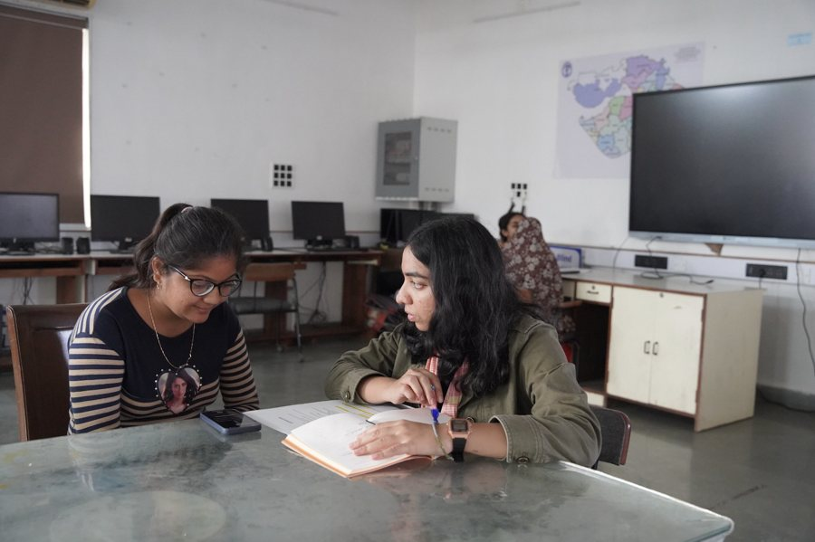
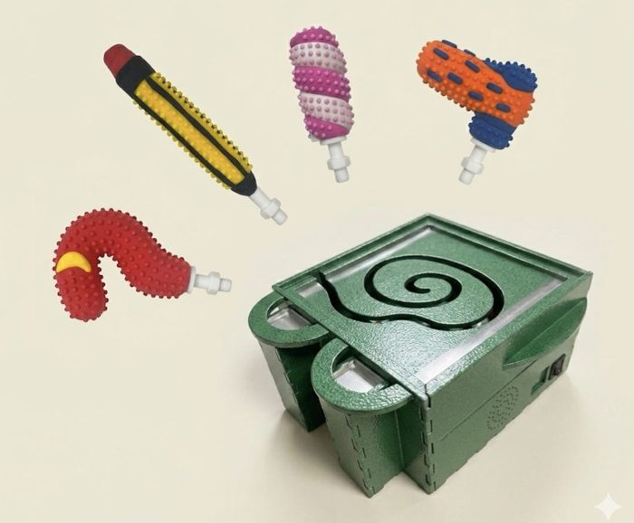
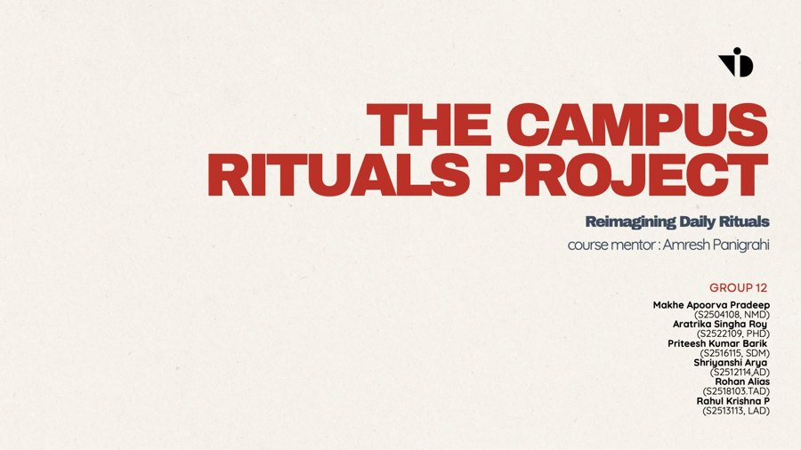
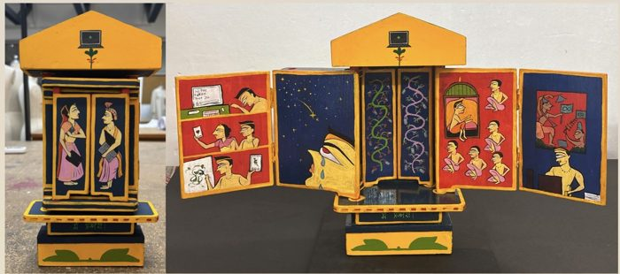

P
R
O
J
E
C
T
S
AM

People & AI
AI and the visually impaired at the Blind People’s Association

FRO-GO
An instrument for children with cerebral palsy

Campus Rituals
Reimagining safety rituals at the wood workshop

Kaavad
Portable shrines & storytelling traditions of Rajasthan